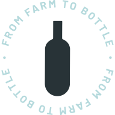
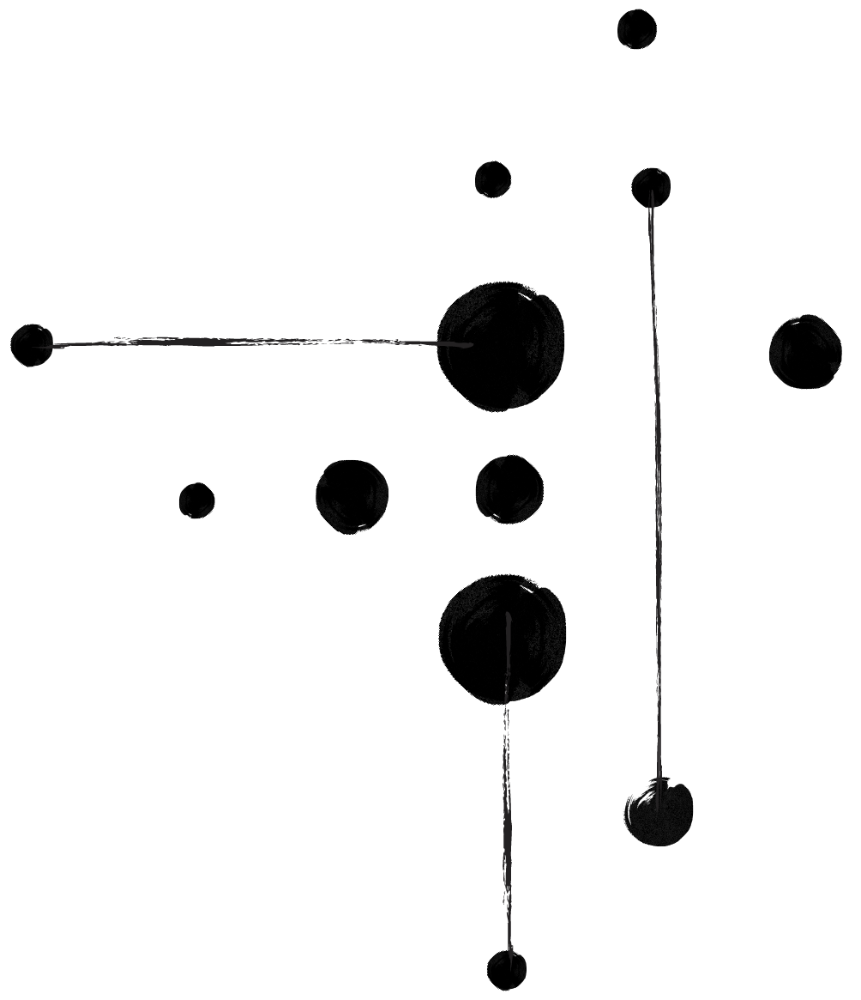
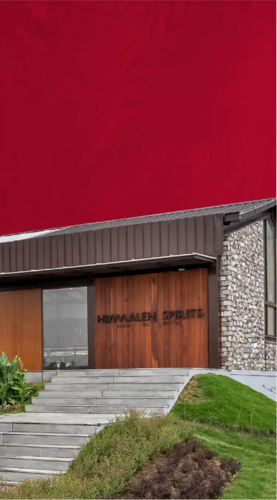
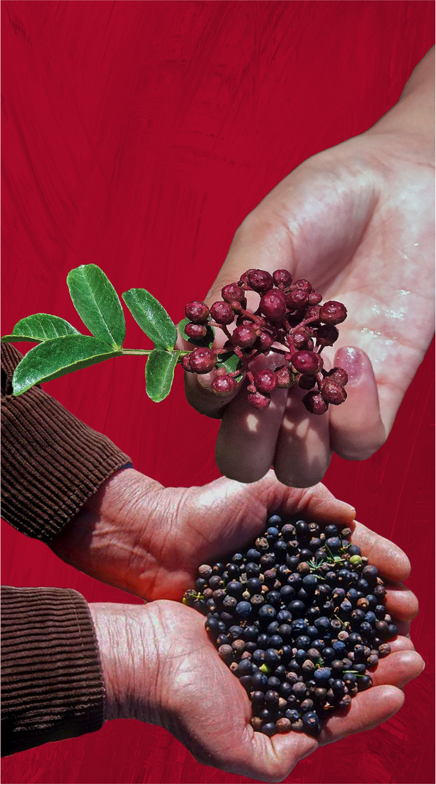
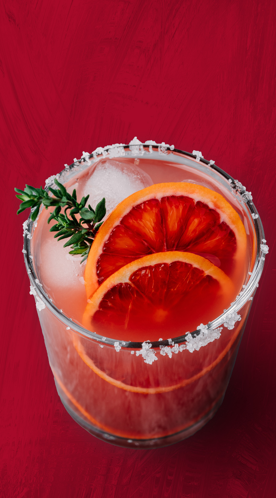
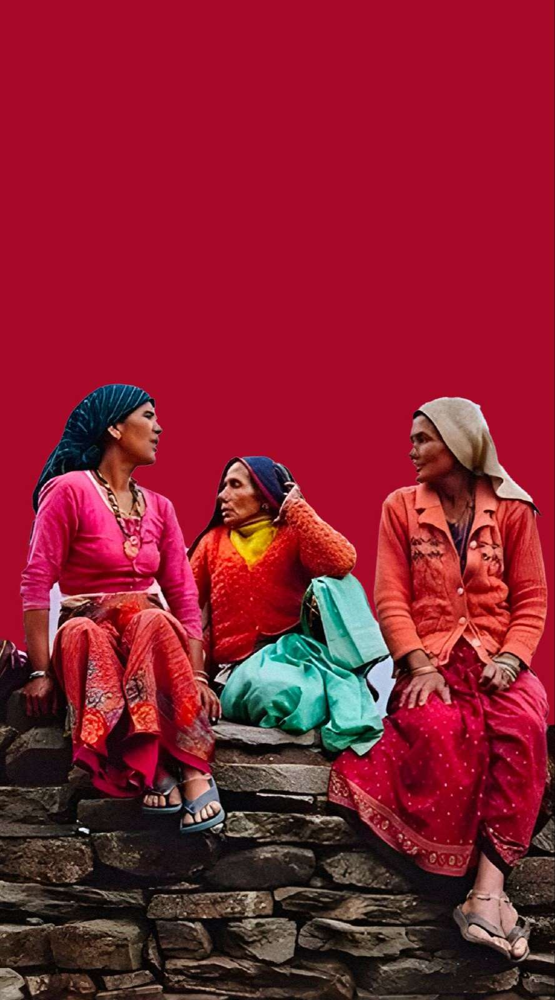
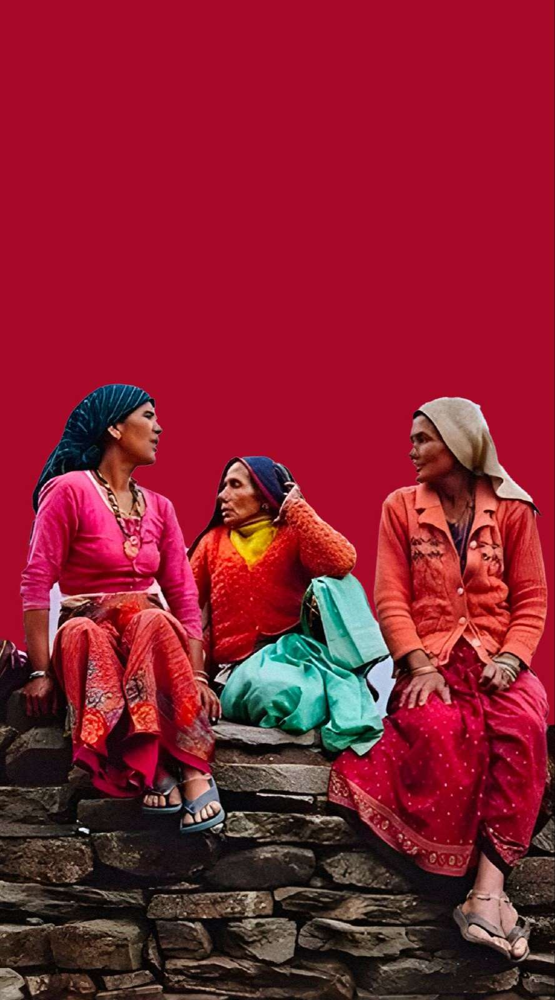
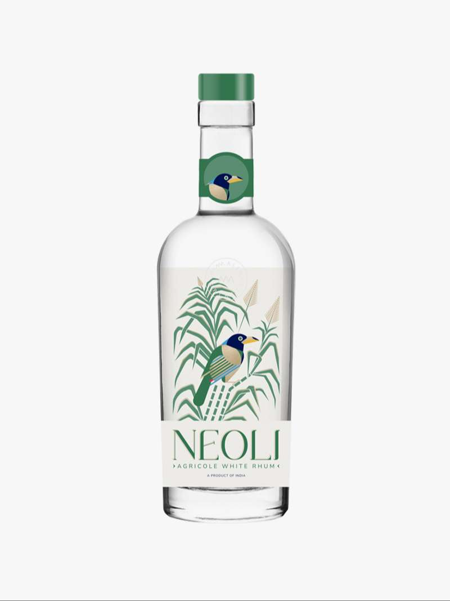
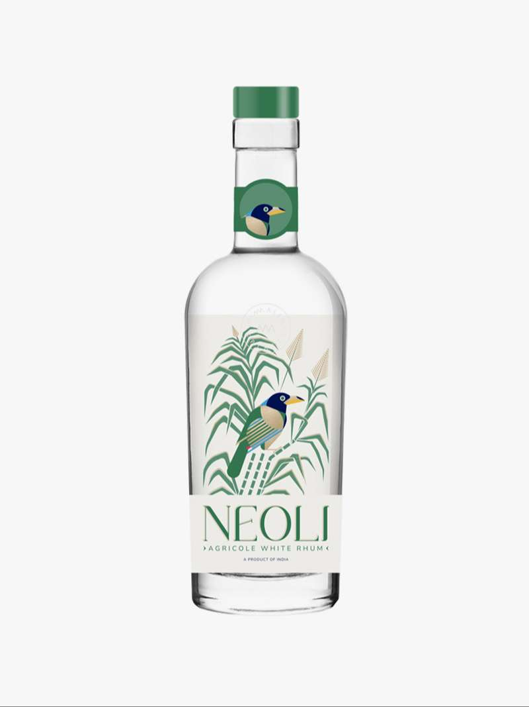

This crafted Dry Gin draws from this inspiration to model its distillery and growing practices. From working with women-led cooperatives, to sourcing botanicals from suppliers who work with women from the region to even its design which traces itself to the traditional craft and art like Aipan and Pichori sustained by proud women in their homes.


.
HIMALAYAN IN SPIRIT AND RIGHT BY NATURE
.
Kumaon & I is made from fresh Himalayan spring water and 11 handpicked, 100% locally sourced regional botanicals that are distilled at source for 9 hours. This infuses every bottle with maximum flavours and adds a unique texture to the spirit. Every bottle is a proud provincial ambassador of this region of Uttarakhand and its terroir.
Each of our farm to bottle edition of Gin is a tribute to the nurturing hands of the sisterhood in the Kumaon region. A tribute to femme power. The grower communities of women who raise the grains and forage for botanicals, mother nature’s fulsome gifts of 6 row barley, Timur berries, Himalayan juniper, high altitude turmeric, fresh, Himalayan water and last but not the least, the soft power of Kumaon’s cultural prowess - stories, arts and crafts. All of them come together to raise this fine spirit.
And rises it does to softly break some glass ceilings.
.


Our Gin comes from a 100% farm to bottle distillery, designed around the principles of minimalism. Nothing in excess and yet ensuring that what gets in our spirit has a characteristic role to play. It traces back to a distinctive terroir, Himalayan spring water, hyper local botanicals, farm bred grains, and an R&D laboratory and tasting house that present the last test. All in an estate-house environment.
The bottle's design is an inventive take on the region's local ritualistic hand-painted art form of Aipan. A white paste made by grounding cooked rice with water (Biswar) is used by local women to draw distinctive patterns on a smooth surface of wet ochre mud Geru which is red. This is complemented by another artform style which is the Kumaoni Pichora pattern. The dots and lines signify the sisterhood and community of women in Uttarakhand. Kumaon & I is a tribute to this femme power and mother nature's bounties.
The flavorsome Gin is a blend of art and science. Experienced distillers and their meticulous detail, 1000 litre Hungarian Copper pot stills from the world's most technologically advanced still makers Hagyo, often called the Tesla of stills, ingredients that bear the stamp of Kumaon's terroir make up a fine cast. Craft meets nature at Himmaleh in a sybaritic setting.

Himalayan Juniper berries, Timur a berry-like Szechwan pepper, black turmeric grown at 10,000 feet altitude, Galgal a local citrus, Kinu (Uttarakhand's Tangerine), Coriander seeds, Thuner (Yew native to the Himalayas), Walnuts from the family estate, Black cardamom, Kalmegh (a nutritive bark) and Rose and six row barley. Each is a proud hyperlocal citizen of the region. These earthy and fresh ingredients make up our Gin - India's first premium, provincial dry Gin.

Cool spicy peppercorns, citrus, and herbal rainforest nose, with a rich textural palate, and a medium dry long finish summarises the tasting note for this dry Gin. What does it pair with and waltz? Well, a classic G&T or a Negroni served on the rocks and garnished with an orange slice or maybe the hyperlocal Kinoo? This is a fine way to open a artful meal or probably pleasantly interrupt with.
 
What raises a fine spirit? We say a universe of love and hands that nurture. From the artful distillers to the local plantation community, from the spirited foragers to the carefully selected partners who help source uncompromised botanicals from the region. From the passionate makers to the sisterhood in the hills that inspires the Gin with its femme power, Kumaon & I is a labour of love of a community that is diverse and nurturing.
Each small-batch bottle of Kumaon & I is a personal journey for the drinker. While the finely crafted spirit captures the flavours & idioms of this region, the brand is a testament to both, the passionate craft of its distillers and the earnest toil of its grower-communities.
Kumaon & I would be inconceivable without its sisterhood, the circle of nurturers. The terrain, and their lifestyle, have given the women in Kumaon a kind of strength quite hard to find anywhere. From climbing the tallest trees for cattle-fodder, to fetching firewood to keep the family warm, to farming, cooking and taking care of the family, they do it all and more with grace and an uncommon strength.
From being labelled disparagingly as “Mother’s ruin” during the temperance movement in the west in its early days (to discourage women drinkers), Gin has indeed come a long way. And found a story that turns its antecedents around its head with Himalayan femme power. Our Gin holds dear the privilege of being reared by this indomitable and generous sorority. It is our most prized badge of honour.
THIS IS THE STORY OF KUMAON & I. FIERCELY INDEPENDENT IN ITS VISION AND BEING A FORCE OF NATURE. IT IS AS MUCH YOUR STORY AS OURS.
.
 
